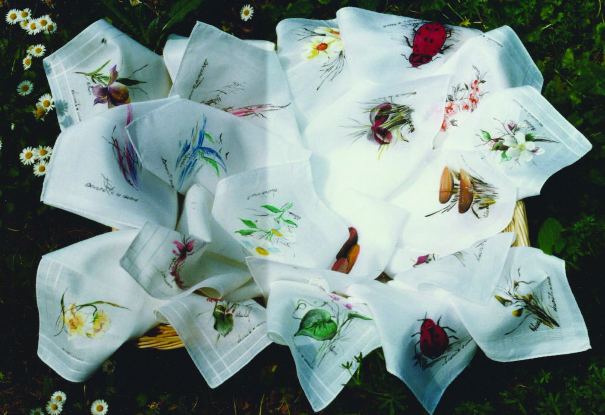
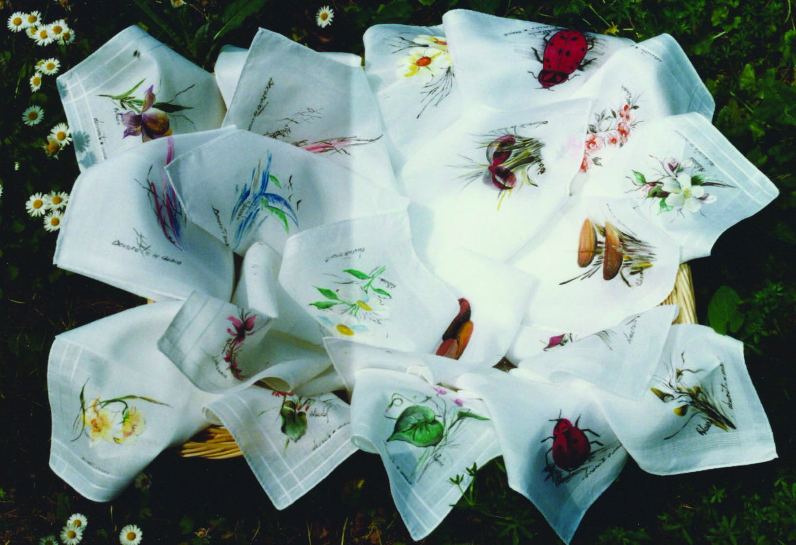

Rolando scopre la pittura su tessuto da autodidatta, affascinato dall’idea di poter impreziosire con la propria arte qualcosa di unico che possa essere indossato o comunque essere visto dalla gente.
Come per gli altri supporti, anche per i tessuti e i capi di abbigliamento l'artista preferisce evitare un disegno preliminare a matita, un po' perché esiste il rischio che resti parzialmente visibile, un po' perché come sempre l'ispirazione "a freddo" e quella con il pennello in mano possono differire parecchio.
Dal punto di vista tecnico i dipinti su tessuto di Rolando si distinguono a seconda dell'incisività e del dettaglio dei temi (prevalentemente floreali) realizzati.
Nella tecnica "dipinto" il disegno è realizzato con dovizia di particolari, contori e colori interni, rendendo l'opera molto verosimile.
Con la tecnica "a getto" il tratto di colore è spesso abbozzato, sfumato, senza contorni precisi, lasciando impresso un certo movimento ai soggetti dipinti.
Nella tecnica battezzata "silhouette" i soggetti prendono forma a partire da pochi tratti, talvolta di solo contorno e in bianco e nero, lasciando agli occhi dell'osservatore il lavoro di immaginazione per completare mentalmente il disegno.
Camicie, gilet, cappotti, ...
Lenzuola, tovaglie, tovaglioli, fazzoletti, e complementi

 
